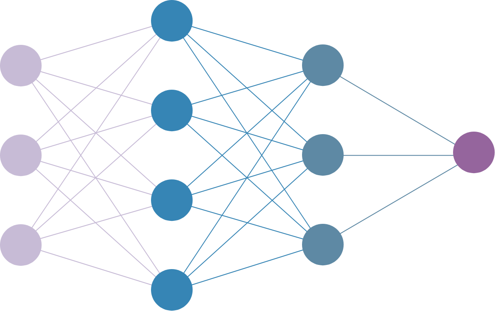

信竞生的机器学习日志
这是我最近一段时间学习机器学习的经历和想法，以及对其他信息学竞赛选手学习机器学习的建议。
前言
作为一位省选时因为刚好没进省队退役的前信息学竞赛选手，当高中紧锣密鼓的步伐在一场重要的考试后戛然而止，迎面而来的是一场悠长的暑假中，闲适而放松的我，不禁回忆起往昔专注信息学竞赛的流金岁月。从初一到高一，多少奋斗，多少困苦，多少温情，总值得好好地回忆一下吧。
当我打开 Codeforces 尝试在简单的题目中尝试寻找当年的感觉时，一股无所适从的无助不觉涌上了心头，当我用将近一个星期发现自己还是一如既往地差，整天整天地做也总共只完成了十几题的时候，我意识到 OI 可能俨然属于我的过去，我可以去探索新的全然未知的事物。毕竟，“天涯何处无芳草” 啊！
最初我尝试了鸿蒙开发，发现如果没有一个明确的目的，开发什么东西都是恼人的细节和无尽的重复。于是，三分钟热情的我，放弃了。
之后，我开始了解 AI，然后……
入门的建议
此处使用 AI 其实是非常不准确的，准确的说法类似标题中的“机器学习”，“计算机视觉”，“计算机文本处理”是其中小的方面，但是如果作为入门，一般以计算机视觉作为基础。
在入门这一方面，我走了一些弯路，看了以下几个不同的课程
- 讲义：Stanford CS231n
- 教材：Grokking Deep Learning (Andrew W. Trask)
-
教材：Deep Learning for Coders with fastai and PyTorch AI Applications Without a PhD (Jeremy Howard, Sylvain Gugger)
这个教材在网上是有配套的讲义的，Practical Deep Learning for Coders
这三个教材主要的区别就在于教学理念的不同：
- 第一个讲义从基础概念逐层递进，讲的速度慢而扎实，数学有点多，作业是函数填空
- 第二个教材从代码实现出发，一步步地从最简单的判断语句讲到卷积神经网络，速度比较慢，前面几章对于 OIer 可能过于简单
- 第三个教材遵循从实践出发的教学理念，基于
fastaiPython 库。一开始使用库实现猫和狗的分类器，逐步拨开各种库的迷雾，开始涉猎各种细节，涵盖面较广。
我自己前一个星期学习第一个讲义，完成了作业的第一项，百思不得其解，感觉离实现一个完整的神经网络遥不可及。于是我在互联网上搜索，选择了教材二，并实现了一点代码，但是它极其慢的起步速度让我很快对它丧失了兴趣。（还不是因为我不够坚持）后来，我在浏览 HuggingFace 的时候邂逅了教材三，一开始学就变得一发不可收拾。
个人认为在入门的时候有几点需要注意：
- 不要觉得起步有点困难就是自己不够努力或不够聪明（高中的心态）。其实很多时候只是没有找到合适的学习资源，或者没有发现适合自己的学习方法。
- 兴趣和成就感真的是非常重要的。没有必要硬逼着自己用一种枯燥的方式学习，从实践中学是非常有效的。
- 不要因为某种学习方法太偏实用，不从理论出发就觉得这个方法“不扎实”，记住，你学这些东西的目的不是为了做对题。
总之，我以教材三作为大家的不二之选。
关于我的学习
学习之前肯定要学习 Python、NumPy 和 Jupyter Notebook。个人建议直接注册一个 Kaggle 账号，然后点侧边栏的 Code ，点击 New Notebook，然后你就可以畅快地使用免费的在线环境了。类似的环境还有 Google Colab。（欢迎在评论中给出其他替代品）
不过，如何在本地机运行自己写的机器学习模型也很重要（毕竟你还是想要把结果掌握在自己手中），这就要求你有一台还不错的电脑（最好是有 nVidia 独立显卡的电脑或者苹果自研芯片的电脑），并用 conda 安装 python，jupyterlab 和 torch。这些操作较为复杂，感兴趣的可以看下面：
使用 conda 安装 Jupyter Notebook 的方法
- 首先在自己的电脑上安装
conda，使用包管理器或者在官网上下载，无论是 Anaconda 还是 Miniconda （个人推荐后者） conda有几个基本命令，如conda create，conda install，conda activate需要提前了解，此外还需要知道如何进入conda命令行（出现(base)字样即进入成功）。- 使用
conda create创建一个专用的虚拟环境，并用conda activate激活，此时(base)字样应该变成你创建的虚拟环境 - 选择一个适合你的 Jupyter notebook 环境，推荐：
- 直接
conda install jupyterlab安装 Jupyter lab，使用时命令行输入jupyter-lab启动，会自动跳出浏览器界面使用。
- 直接
- 试着在环境中创建一个
.ipynb文件，在代码框中输入一行 Python 代码（比如print("Hello world!")），按下Shift+Return，测试环境是否配置成功。 - 若需要安装 Pytorch 等库，直接按照官方文档中安装方法操作即可，注意必须在当前
conda环境下操作。
下面是我学习教材三 Deep Learning for Coders with fastai and PyTorch AI Applications Without a PhD (Jeremy Howard, Sylvain Gugger) 的一些笔记：
（未完待续）
学习之前要做的一些事
神经网络的直观理解
不过，学习之前，我们必须对神经网络有一些直观上的理解。
下图是神经网络的基本结构，每条边上都有一个参数，这些参数不需要预先设定，都是通过学习得到的。我们使用的框架需要是通用的，对于各种各样的问题，都可以通过调整参数（训练）找到一组优秀的解。

训练完成后，预期的结果是，我们在输入层输入数据（比如一张图片各个像素点的值），然后在输出层得到我们想要计算的值。（比如这张图片是一只猫，一只狗的置信度）
如何构造出这样通用的框架？一个简单的想法是，我们可以对输入层结点的所有节点进行不同的加权求和（线性变换），得到输出层不同节点的结果。数学上，如果把第一层输入记做 \(x\)（是一个列向量），我们可以将第一层的操作计作 \(l_1 = W_1x\)。
不过，这样只能得到一个线性函数，如果线性函数解决不了预期的问题呢？一个想法是，增加层数。但是，多少个线性变换叠加后仍然是线性变化，从数学上的表示来看，经过 \(n\) 层隐藏节点后，最终的输出 \(y=W_{n+1}W_n\dots W_2W_1x\)，根据矩阵乘法的结合律，可以用 \(W=W_{n+1}W_n\dots W_2W_1\) 代替这么多个矩阵的乘积，与没有隐藏节点的网络相比，不能增加表示函数的复杂性。
为此，我们需要引入激活函数 (activation function)，为这个网络加入非线性 (nonlinearity)，具体上来说，每一层操作以后，我们把该层所有节点的值由 \(a\rightarrow f(a)\)。这样，\(y=W_{n+1}f(W_nf(\dots W_2 f(W_1 x)))\)，我们可以用调节参数的方式，拟合各种各样的函数了。
机器学习的训练其实就是根据训练数据集调整参数的过程，对于神经网络，学习的基本思路就是沿着误差函数 (loss function) 下降的方向（即导数的方向）调整每个参数，从而得到一个较好的局部最优解。（误差函数衡量的就是模型的不准确程度，具体计算程度有多种），学名叫梯度下降 (gradient descent)。
更多，更直观的理解，可以参考 Bilibili。
过拟合和双重下降
如果按部就班地学，很可能会错过双重下降 (double descent) 这个新词。Youtube 上有一个超级棒的动画演示
三个参数画大象，四个参数鼻子晃。——冯·诺依曼
传统机器学习理论认为，当参数过多的时候，模型不仅会学会训练集的区别性信息，还会学习训练集的噪声，这种现象叫做过拟合 (overfitting)。


然而，现代机器学习理论认为，当参数多到远大于训练集样本信息量的时候，这时候对于有的模型过拟合现象可能会逆转，称为双重下降 (double descent)。


双重下降现象的发现催生了当前大模型的应用，粗浅的理解是，当模型足够大的时候，很多问题其实都能解决。这印证了 OI 中的一句老话：
骗分过样例，暴力出奇迹。
进一步学习可以参考：